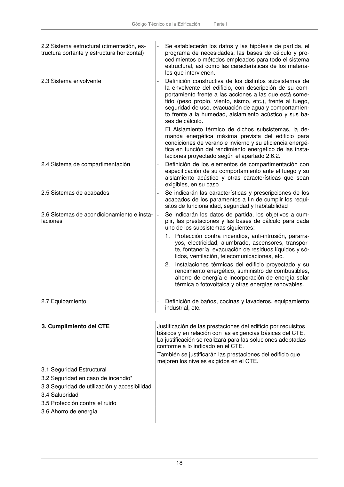

PARTE-I · Fragmento de PDF p18 · versión 2022-06-14 · capa oficial
Formatos: JSON compacto · Markdown · PDF fuente
Ámbito del documento · texto del ámbito · documento y tablas
ID técnico a0096 · PDF pág. 18-19 · jerarquía no validada por persona · no es capítulo: sin_linea_de_encabezado · padre: raíz · literal original en el contenido: «3. Cumplimiento del CTE»
3. Cumplimiento del CTE Justificación de las prestaciones del edificio por requisitos básicos y en relación con las exigencias básicas del CTE. La justificación se realizará para las soluciones adoptadas conforme a lo indicado en el CTE. También se justificarán las prestaciones del edificio que mejoren los niveles exigidos en el CTE. 3.1 Seguridad Estructural 3.2 Seguridad en caso de incendio* 3.3 Seguridad de utilización y accesibilidad 3.4 Salubridad 3.5 Protección contra el ruido 3.6 Ahorro de energía Código Técnico de la Edificación Parte I 19 Cumplimiento de otros reglamentos y

PDF fuente redistribuible: copia fiel enlazada en esta página (SHA256 verificado).